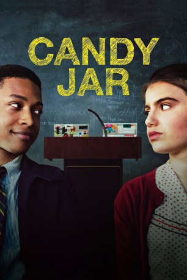

#8826 Candy Jar
 
 IMDB-Wertung: 5.8 / 10
IMDB-Wertung: 5.8 / 10  Tomatometer: 71
Tomatometer: 71  Metascore: 0
Metascore: 0 
Die introvertierte Schülerin Lona Skinner die aus einer einfachen Arbeiterfamilie stammt, und der aus vermögenden Verhältnissen kommende Bennett Russell sind erbitterte Rivalen im Debatierteam. Doch die Erzfeinde müssen zusammenarbeiten, als es darum geht, an den landesweiten Meisterschaften teilzunehmen. Dabei müssen sie nach und nach erkennen, dass sich Gegensätze durchaus anziehen können…
Jahr: 2018
Dauer: 92 Minuten
FSK:
Land: USA Studio: NetflixTonspuren: DD5.1 - ,
Untertitel: Deutsch, Englisch,
Auflösung: 1080p (1920x1080) Größe: 2918 MB
Genre: Komödie
Regisseur: Ben Shelton
Drehbuch: Chad Klitzman
Soundtrack: Ryan Leach
Darsteller:
 Jacob Latimore als Bennett
Jacob Latimore als Bennett Sami Gayle als Lona
Sami Gayle als Lona- Tom Bergeron als Principal Nelson
 Helen Hunt als Kathy
Helen Hunt als Kathy- Paul Tigue als Mr. Johnson
- Austin Flynn als Twin Taylor
- Blake Flynn als Twin Tanner
 Christina Hendricks als Amy
Christina Hendricks als Amy Uzo Aduba als Julia
Uzo Aduba als Julia- Zack Shires als Davidson Debater #1
- Daniel Kang als Davidson Debater #2
- Evan Castelloe als Zack
- Ryan Walden als Davidson Debater #3
 Wilbur Fitzgerald als Davidson Principal
Wilbur Fitzgerald als Davidson Principal- Alexandra Ficken als Newnan Debater
- Zachary Seabaugh als Nick
- Antonia Gentry als Jasmine
 Tracey Bonner als Newnan Principal
Tracey Bonner als Newnan Principal- Ted Maritz als Edison Debater #1
- Danielle Lyn als Edison Debater #2
- Ariana Guerra als Dana
- Blake Jones als Cafe Manager
- Kathleen Hogan als Valencia
- Daniel Salyers als State Tournament Debater #1
- Anna Rappaport als State Tournament Debater #2
- Judy Clement als Semi Champion Judge
- Kelly O'Neal als Debate Chairman
 L. Warren Young als Concession Worker
L. Warren Young als Concession Worker- Donovan Elmore als Little Bennett Russell (uncredited)
- Logan Howard als High School Student (uncredited)
- Alyssa AnnMarie Marquez als Young Lona (uncredited)
- Kelsey Walsh als Debate Student (uncredited)
- Lina Zalewski als Movie Patron (uncredited)
 Charles Black als Mail Staffer
Charles Black als Mail Staffer- Corey Creque als Debater (uncredited)
- April Etchart als Coffee Shop Patron (uncredited)
- Serene Lee-Sng als School Receptionist (uncredited)
- Taylin Destiny Morris als Intern (uncredited)
- Cory Michael Peeler als High School Student (uncredited)
 Patti Schellhaas als Movie Theater Patron (uncredited)
Patti Schellhaas als Movie Theater Patron (uncredited)- Emily Schulte als Emily (uncredited)
- Wayne Smith Jr. als High School Debate Student (uncredited)
- Michael Steedley als Edison Debater (uncredited)
- Dylan Webb als Debater (uncredited)
- Miles Webb als High School Student (uncredited)
Datei: X:\2018(A-F)\Candy Jar (2018, FSK, 1920x1080).mkv seit 30.04.2018
Festplatte: HD 2017(A-Z)-2018(A-F)
 Es gibt insgesamt 151 Filme in der Gruppe '2018(A-F)'
Es gibt insgesamt 151 Filme in der Gruppe '2018(A-F)'